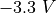
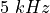
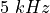

Four-channel oscilloscope, and much more
Eyes17 comes with an application whose default User Interface is an
enhanced four-channel oscilloscope.
- Link to YouTube videos
- The Oscilloscope program mainly functions as a four channel
oscilloscope, with inputs A1, A2, A3 and MIC.
- Adjust the x-axis limit of the graph, using the Timebase Slider,
generally to view several cycles of the waveform.
- If the waveform is not stable, select the proper trigger source. If
needed adjust the Trigger level.
- The traces can be saved to a file, in text format. It is possible to
take the Fourier transform and view the frequency spectrum of the
input waveform.
- The oscilloscope program also has control/monitor widgets on the
right side panel to access most of the ExpEYES features.
- The inputs A1, A2, A3 and the resistance connected to SEN are
measured and displayed every second. But these readings are
meaningless when AC inputs are connected.
- For sinusoidal AC inputs, enable the Check-Button in front of the
channel widget to view the Peak voltage and frequency.
- The ExpEYES Input/Output terminals are briefly described below.
Output Terminals
- CCS:
 Constant Current Source. On/Off using Check-Button
Enable CCS.
Constant Current Source. On/Off using Check-Button
Enable CCS.
- PV1: Programmable Voltage,
 range. Can be set using the
Slider or Text-Entry widget
range. Can be set using the
Slider or Text-Entry widget
- PV2: Similar to PV1, but ranges from  to

- SQ1: Square Wave Generator, swings from
 to
to  .
Frequency can be set from
.
Frequency can be set from  to .
to .
- SQ2: Same as SQ1, but available as an option of WG.
- OD1: Digital Output, voltage can be set to or .
- WG: Waveform Generator. Frequency from to .
Amplitude can be set to
 ,
,  or
or  .
Can be set to Sine, Triangular or Square.
In Square mode the output is on SQ2, with to swing.
.
Can be set to Sine, Triangular or Square.
In Square mode the output is on SQ2, with to swing.
- -WG: Inverted output of WG


 via a resistor
via a resistor , range is selectable
from pull down menu. AC/DC mode selection by slider switch on the
box.
, range is selectable
from pull down menu. AC/DC mode selection by slider switch on the
box. resistor gives a gain of
.
resistor gives a gain of
.